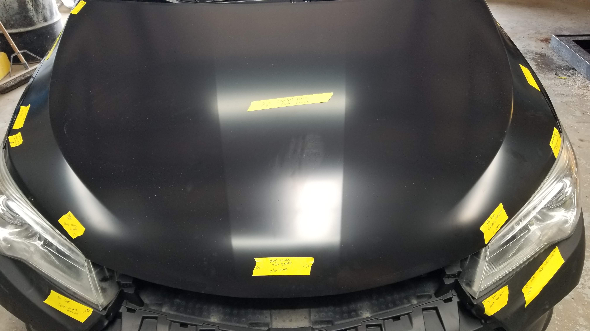

When your car is repaired after an accident, you assume the parts being installed are safe — equal to what came from the factory. Your insurance company tells you they're using "like kind and quality" parts. They may even mention CAPA certification as proof.
What they don't tell you is that CAPA certified parts have never been crash tested. Ever. We have the written confirmation directly from CAPA's Director of Operations to prove it.
At Rusty's Bodywerks, we refuse to use these parts. Here's everything you need to know about why.
When you buy a new car, every panel, bumper, hood, and structural component is engineered and tested by the manufacturer to meet precise safety, fit, and performance standards. These are called OEM parts — Original Equipment Manufacturer parts.
Aftermarket parts are copies of those parts, manufactured by third-party companies — largely overseas, predominantly in China — and sold at a fraction of the cost. Insurance companies push their use because they're cheaper. The savings go to the insurance company. The risk goes to you.
The insurance industry created an organization called CAPA — the Certified Automotive Parts Association — to give these aftermarket parts a veneer of legitimacy. The argument is that CAPA certification means the parts are equivalent to OEM and therefore safe.
There's just one problem. We asked CAPA directly whether their parts are crash tested. Here is their answer, in writing, from CAPA's own Director of Operations:
Read that carefully. CAPA does not crash test their parts. The safety of those parts is not proven — it is presumed. That word is doing a lot of work. When aftermarket parts are installed on your car after a collision, their ability to protect you in the next crash has never been independently verified through actual crash testing.
The following video shows an actual crash test comparing a vehicle repaired with aftermarket parts against a vehicle repaired with OEM factory parts. The results are alarming — the aftermarket-repaired vehicle performed significantly worse, with increased injury risk to occupants.
This crash test demonstrates how aftermarket parts changed the vehicle's crash safety rating and increased occupant injury risk.
CAPA was created by the insurance industry to provide certification for aftermarket parts. The majority of CAPA's Board of Directors are representatives from insurance companies — the same companies that financially benefit from using cheaper aftermarket parts on your repair.
The organization that certifies these parts as "safe enough" is controlled by the industry that profits from using them. You can verify this yourself at capacertified.org/About/BoardOfDirectors.
This is the fox guarding the hen house. CAPA was built to give insurance companies cover to use cheaper parts on your vehicle. Their own certification admits the parts are not crash tested — only presumed comparable.
CAPA does have a decertification program — meaning parts can be pulled from certification if they're found to be substandard. But here's the critical flaw: there is no mechanism to notify the end users of decertified parts.
That means right now, thousands of vehicles driving on roads across Texas have parts installed that were later decertified — and the owners have no idea. The shop that installed the part doesn't know. You don't know. Nobody tells you.
Your car was repaired with a part that was certified at the time. That certification was later pulled. Your car is still on the road with that part. And you will never be notified.
Beyond the safety concerns, there's a practical problem we encounter every time we order aftermarket parts to test: they don't fit. Every single time we have ordered aftermarket parts — every time, without exception — those parts have been returned for fitment issues.
These are not precision-engineered components. They are copies made to approximate dimensions, manufactured to a price point. The gaps are wrong. The mounting points don't align. The body lines don't match. A poorly-fitting part doesn't just look bad — it affects how the vehicle performs aerodynamically, how water seals, and how the panel behaves in an impact.

Most insurance policies contain language allowing the insurer to use "like kind and quality" (LKQ) parts instead of OEM factory parts. On paper, this sounds reasonable — parts of equivalent quality and type. In practice, it is the legal justification for putting uncrash-tested aftermarket parts on your vehicle.
The critical question is: are these parts actually like kind and quality? Based on everything we've outlined above — no crash testing, CAPA's own admission of "presumed" safety, active decertification with no consumer notification, and consistent fitment failures — the answer is clearly no.
When you receive a repair estimate from an insurance company, it will often specify aftermarket or CAPA certified parts. You have the right to push back on this. In Texas, you can request OEM parts. Your insurer may require you to pay the difference in cost — but that difference is often smaller than you'd expect, and the safety and value difference is not small at all.
Here's what to say: "I am requesting that all structural and safety-related components be replaced with OEM manufacturer parts. I do not consent to the use of aftermarket parts on my vehicle."
If your insurer pushes back, call us. We deal with insurance companies every day and we know exactly how to advocate for your right to a proper, safe repair.
Every repair at Rusty's Bodywerks uses factory-approved OEM parts. Every time. We follow manufacturer repair procedures that specify OEM parts because those procedures exist to protect the people in the vehicle. We back every repair with a lifetime transferable warranty — something we could never offer if we were installing parts we didn't fully trust.
We've tested aftermarket parts. We've ordered them, fit them, documented the problems, and sent them back. We know exactly what they are. And we know exactly what they're not — which is safe, properly fitted, or worthy of installation on any vehicle we put our name on.
If you want to know what parts are being used on your vehicle, ask. If your shop won't tell you — or tells you aftermarket parts are just as good — call us at (972) 782-8000. We'll give you the honest truth.
Call us before you authorize any repair. We'll make sure your vehicle gets the parts it was built with — and the safety your family deserves.
📞 Call (972) 782-8000 Book a Free Consultation →